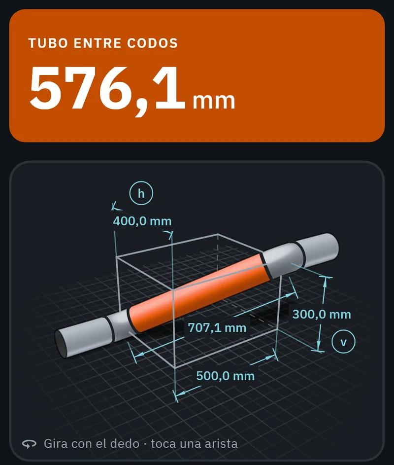
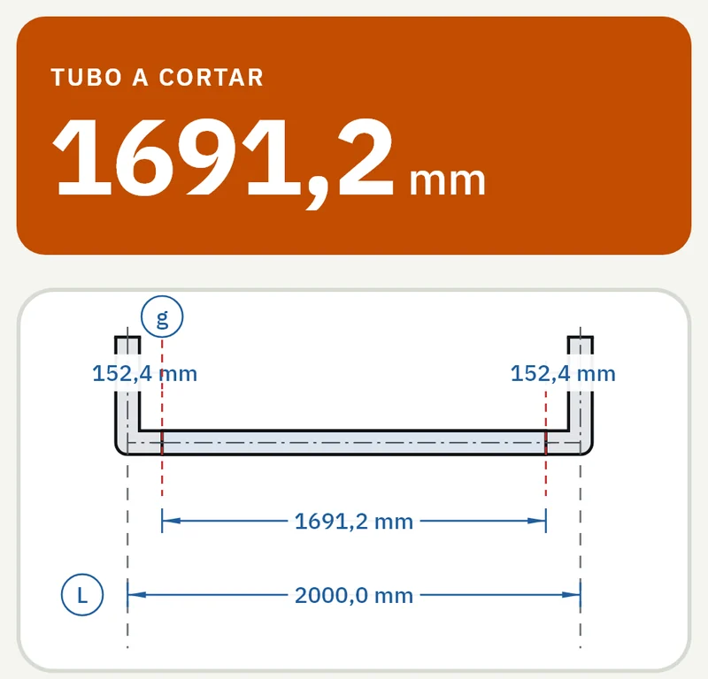

Tubería
El tubo a cortar entre dos accesorios, con lo que se come cada uno ya descontado. Codos cortados a cualquier ángulo, codos girados, quiebros en S, peines e injertos en codo, y una estimación del consumible de soldadura.
- Largo de corte
- Cortar codo
- Codo girado
- Quiebro en S
- Peine
- Injerto en codo
- Soldadura

